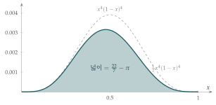

STEP I 1997, 문제 6
계속 읽기 전에 문제를 먼저 읽어 보자. 문제는 STEP Support Programme의 문제 데이터베이스에 있다: step.maths.org/questions/97-s1-q6
도입
여러 세대의 학생들이 \(\pi\)는 “대략 \(\frac{22}{7}\)”이라고 배워 왔다. 이것은 매우 좋은 근삿값(approximation)이다. \(\frac{22}{7} = 3.142857\ldots\)이고 \(\pi = 3.141592\ldots\)이다. 그런데 \(\frac{22}{7}\)은 \(\pi\)보다 큰가, 작은가? 그리고 누군가가 대신 계산해 둔 \(\pi\)의 자릿수를 그냥 찾아보지 않고, 이것을 증명할 수 있는가?
이 문제는 수학 전체를 통틀어 가장 우아한 증명 가운데 하나를 보여 준다. 양의 함수의 적분 하나는 당연히 양수여야 하는데, 이 적분이 정확히 \(\frac{22}{7} - \pi\)와 같다는 것이 밝혀진다. 피적분함수(integrand)가 양수이므로 적분도 양수이고, 따라서 \(\frac{22}{7} > \pi\)이다. 증명 전체가 몇 줄에 들어가며, 너무나 깔끔해서 수학 티셔츠에 퍼즐로 실릴 정도이다.
시작하기 전에
왜 \(\int_0^1 \frac{\text{다항식}}{1+x^2}\,\mathrm{d}x\)에서 \(\pi\)가 나오는가? 이런 꼴의 간단한 적분 가운데 그 자체로 \(\pi\)를 주는 것은 무엇인가?
\(\int_0^1 \frac{\mathrm{d}x}{1+x^2} = \arctan 1 = \frac\pi4\)이다. 다항식을 \(1 + x^2\)으로 나누면, 다항식인 몫(quotient)(적분하면 유리수가 된다)과 \(1 + x^2\) 위에 놓인 상수 나머지(remainder)(적분하면 \(\pi\)의 유리수배가 된다)를 얻는다. 문제의 첫 부분은 바로 이 나눗셈을 하라고 요구한다.
차근차근 풀기
단계 1 다항식의 나눗셈
먼저 전개한다. \((1 - x)^4 = 1 - 4x + 6x^2 - 4x^3 + x^4\)이므로 \[x^4(1-x)^4 = x^8 - 4x^7 + 6x^6 - 4x^5 + x^4.\]
다항식의 나눗셈(polynomial division)을 하든 계수를 비교하든, \(x^2 + 1\)로 나누어 보자. 나머지는 무엇인가?
\((a_6x^6 + \cdots + a_0)(x^2 + 1) + b\)에서 최고차항부터 계수를 비교(comparing coefficients)하면 다음과 같다. \(a_6 = 1\); \(a_5 = -4\); \(a_4 + a_6 = 6\)이므로 \(a_4 = 5\); \(a_3 + a_5 = -4\)이므로 \(a_3 = 0\); \(a_2 + a_4 = 1\)이므로 \(a_2 = -4\); \(a_1 + a_3 = 0\)이므로 \(a_1 = 0\); \(a_0 + a_2 = 0\)이므로 \(a_0 = 4\); 마지막으로 \(a_1 = 0\)(\(x\)의 계수)이고 \(a_0 + b = 0\)이므로 \(b = -4\)이다. 즉, \[x^4(1-x)^4 = (x^6 - 4x^5 + 5x^4 - 4x^2 + 4)(x^2 + 1) - 4.\]
단계 2 적분
\(1 + x^2\)으로 나누면 \[\frac{x^4(1-x)^4}{1+x^2} = x^6 - 4x^5 + 5x^4 - 4x^2 + 4 - \frac{4}{1+x^2},\] 이므로 \[\int_0^1 \frac{x^4(1-x)^4}{1+x^2}\,\mathrm{d}x = \frac17 - \frac46 + \frac55 - \frac43 + 4 - 4\cdot\frac\pi4 = \frac17 - \frac23 + 1 - \frac43 + 4 - \pi.\] 이제 \(-\frac23 - \frac43 = -2\)이므로 유리수 부분은 \(\frac17 + 3 = \frac{22}{7}\)이고, 적분값은 \(\frac{22}{7} - \pi\)이다.■
단계 3 적분값의 범위 정하기
피적분함수는 \((0, 1)\)에서 양수이므로 곧바로 \(\frac{22}{7} > \pi\)이다. \(\pi\)의 하계를 얻으려면 적분값의 상계가 필요하다. \([0, 1]\)에서 \(\frac{1}{1+x^2}\)은 얼마나 커질 수 있는가?
\([0, 1]\)에서 \(1 \leq 1 + x^2 \leq 2\)이므로 \[\tfrac12 x^4(1-x)^4 \leq \frac{x^4(1-x)^4}{1+x^2} \leq x^4(1-x)^4,\] 이고, 양 끝점을 제외하면 등호가 성립하지 않는다.
\(\int_0^1 x^4(1-x)^4\,\mathrm{d}x\)를 계산하고 증명을 마무리하라.
전개식을 항별로 적분하면 \[\int_0^1 x^4(1-x)^4\,\mathrm{d}x = \frac19 - \frac48 + \frac67 - \frac46 + \frac15 = \frac{1}{630}.\] (공통분모 \(2520\)으로 통분하면 \(280 - 1260 + 2160 - 1680 + 504 = 4\)이고, \(\frac{4}{2520} = \frac{1}{630}\)이다.) 따라서 \[0 < \frac{22}{7} - \pi < \frac{1}{630},\] 즉 \(\frac{22}{7} > \pi > \frac{22}{7} - \frac{1}{630}\)이다.■
수치로 보면 \(\frac{22}{7} - \frac{1}{630} = 3.14127\ldots\)이므로 \(3.1412 < \pi < 3.1429\)를 증명한 셈이다. 왼쪽 부등식까지 이용하면 \(\frac{1}{1260} < \frac{22}{7} - \pi\)이고, 이로써 상계를 \(\pi < 3.14207\)로 개선할 수 있다.

돌아보기
양수성으로 부등식을 증명한다. 양의 함수의 적분은 양수이다. 적분값이 \(\frac{22}{7} - \pi\)임을 알아내자마자 부등식이 곧바로 나왔다.
작은 피적분함수, 정밀한 범위. 인수 \(x^4(1-x)^4\)는 \([0, 1]\)에서 매우 작으며(최대 \(\frac{1}{256}\)), 이 때문에 적분값이 작고 범위가 정밀해진다.
유리수와 \(\pi\)의 배수의 합. 2.9 절에서와 마찬가지로, “유리수 \(+\) 어떤 상수의 유리수배” 꼴의 적분이 작으면 그 상수의 좋은 유리수 근삿값을 얻는다.
숨은 수학
아르키메데스(Archimedes)는 기원전 250년 무렵, 원에 내접하고 외접하는 \(96\)각형의 둘레를 계산하여 \(\frac{223}{71} < \pi < \frac{22}{7}\)을 증명하였다(2.5 절의 다각형과 비교해 보라). 적분을 이용한 증명은 훨씬 최근의 것이다. 이 증명은 D. P. Dalzell이 1944년에 발표하였고, 1968년 미국 대학생들을 위한 퍼트넘 대회(Putnam competition)에 문제로 출제되면서 유명해졌다. 이 증명의 매력은 수치 계산이 전혀 필요 없다는 점이다. 부등식 \(\frac{22}{7} > \pi\)는 양의 함수의 적분은 양수라는 사실에서 저절로 나온다.
같은 아이디어로 얻는 더 나은 근삿값
이 방법은 일반화된다. \(x^4(1-x)^4\) 대신 \(x^8(1-x)^8\)을 쓰면 같은 나눗셈으로 \[\int_0^1 \frac{x^8(1-x)^8}{1+x^2}\,\mathrm{d}x = 4\pi - \frac{188684}{15015},\] 를 얻고, 이로써 \(\pi > \frac{47171}{15015} = 3.1415917\ldots\)가 증명되는데, 이는 유효숫자(significant figures) 여섯 자리까지 정확하다. 2009년에 Stephen Lucas는 피적분함수가 음이 아닌 이런 종류의 적분들의 족을 찾아내어, 유효숫자 일곱 자리까지 정확한 \(\frac{355}{113}\)을 비롯한 다른 유명한 근삿값들에 대한 부등식을 증명하였다.
근삿값과 무리성
왜 \(\pi\)는 \(\frac{22}{7}\)이나 \(\frac{355}{113}\)처럼 좋은 분수 근삿값을 가질까? 모든 무리수(irrational number)는 그 수와의 차가 \(\frac{1}{q^2}\) 이내인 분수 \(\frac pq\)를 무한히 많이 가지는데, \(\pi\)는 연분수(continued fraction) \([3; 7, 15, 1, 292, \ldots]\)에 큰 항 \(292\)가 들어 있어서 앞부분에 유난히 좋은 근삿값을 몇 개 가지게 된다(2.2 절 참고). 이 문제에 나온 것과 같은 적분을 점점 더 작게 만드는 것은, 어떤 수가 분수로 너무 잘 근사될 수 없으며 따라서 무리수임을 보이는 증명의 출발점이 된다. \(\pi\)가 무리수라는 Ivan Niven의 유명한 한 쪽짜리 증명(1947)은 \(\frac{x^n(1-x)^n}{n!}\sin(\pi x)\)의 적분을 이용하는데, 이는 2.9 절에 나온 적분들의 삼각함수 사촌이다.
사고 기술
\(A > B\)를 증명하려면, 적분값이 \(A - B\)인 양의 함수를 찾아라.
이렇게 하면 부등식이 하나의 항등식과 자명한 사실로 바뀐다. 이것은 해석학에서 가장 유용한 요령 가운데 하나이며, 적분 대신 제곱의 합을 쓰는 같은 아이디어로 3.2 절에서 AM–GM을 증명하였다.
더 도전하기
수치를 확인하라. \(\frac{22}{7} - \pi\)를 유효숫자 네 자리까지 계산하고, 그 값이 \(\frac{1}{1260}\)과 \(\frac{1}{630}\) 사이에 있음을 확인하라.
베타 적분. 공식 \(\int_0^1 x^n(1-x)^n\,\mathrm{d}x = \frac{(n!)^2}{(2n+1)!}\)(4.4 절에서 증명함)을 이용하여 \(\int_0^1 x^4(1-x)^4\,\mathrm{d}x = \frac{1}{630}\)임을 확인하라.
아래쪽 근삿값. 다음을 보여라. \[\int_0^1 \frac{x(1-x)^2}{1+x^2}\,\mathrm{d}x = \frac\pi2 - \frac32 \quad\text{그리고}\quad \int_0^1 \frac{x^2(1-x)^4}{1+x^2}\,\mathrm{d}x = \pi - \frac{47}{15},\] 이로부터 \(\pi > 3\)과 \(\pi > \frac{47}{15}\)을 이끌어 내라. 왜 이것들은 \(\frac{22}{7}\)보다 덜 정확한가?
더 나아가기. 심화 위에 주어진 \(\int_0^1 \frac{x^8(1-x)^8}{1+x^2}\,\mathrm{d}x\)에 대한 항등식을 확인하라. (나눗셈은 컴퓨터 대수 시스템(computer algebra system)이 해 줄 것이다. 핵심은 나머지가 \(16\)이어서 \(4\pi\)가 나온다는 것을 확인하는 데 있다.)
더 읽을거리
Petr Beckmann, A History of \(\pi\) (St Martin’s Press). \(\pi\)의 역사. 아르키메데스의 다각형 방법을 자세히 다루며, 그 밖에도 많은 내용이 담겨 있다.
Stephen Lucas, “Approximations to \(\pi\) derived from integrals with nonnegative integrands”, American Mathematical Monthly 116 (2009). 음이 아닌 피적분함수를 가진 적분에서 얻은 \(\pi\)의 근삿값. 짧고 읽기 쉽다.
Ivan Niven, Irrational Numbers (Mathematical Association of America). 무리수. \(\pi\)가 무리수라는 Niven의 증명이 실려 있다.